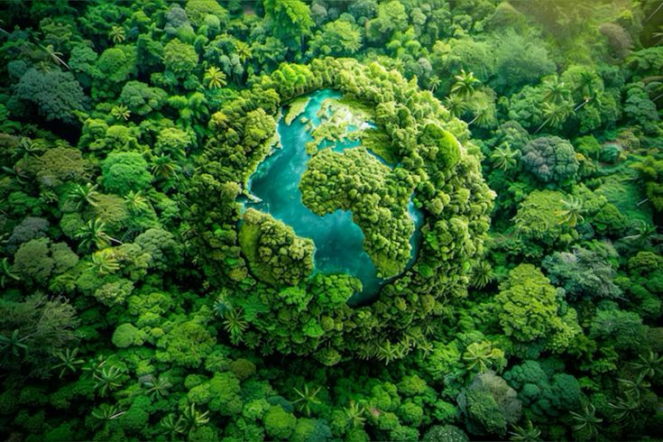
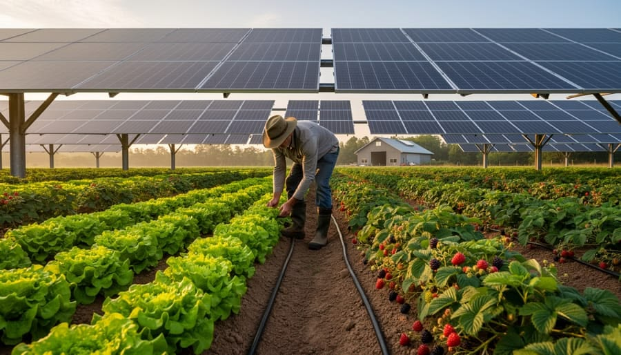

A green lifestyle means making simple choices that are better for nature and our everyday surroundings. Small changes in the way we travel, shop, eat and use energy can help create a cleaner and healthier future.
Explore Green LivingSimple habits can make everyday living more sustainable.
Using water, electricity and other resources carefully helps reduce unnecessary waste and supports a more sustainable way of living.
Reusing useful items, avoiding unnecessary plastic and recycling materials can help keep our surroundings cleaner.
Walking, cycling, public transport and other responsible choices can reduce environmental impact in daily life.

A sustainable lifestyle can begin at home. Switching off unused lights, saving water and choosing energy-efficient appliances are simple ways to use fewer resources.
Plants, natural lighting and reusable products can also make everyday spaces more comfortable while encouraging environmentally responsible habits.
Small actions today can create positive changes for tomorrow.
Turn off taps when water is not needed and avoid wasting water during daily activities.
Switch off lights, fans and electronic devices when they are not being used.
Reusable bottles, bags and containers can reduce the need for many disposable products.
Growing plants around homes and workplaces can create greener and more pleasant surroundings.
Green living is not about changing everything at once. It is about making better choices whenever possible and developing habits that can continue for a long time.
When many people adopt small sustainable habits, these actions can contribute to cleaner cities, less waste and a healthier environment.
